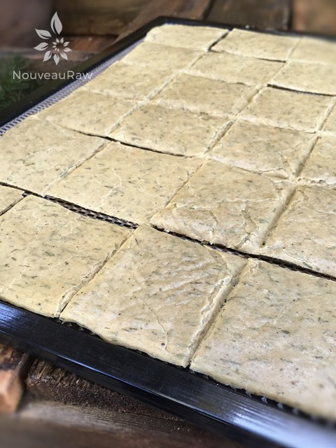
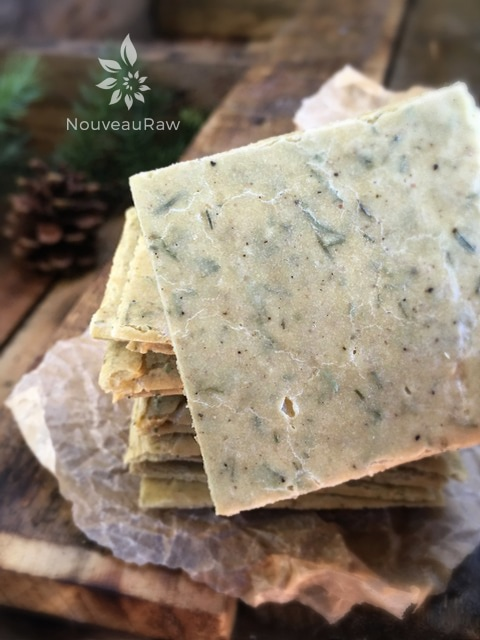
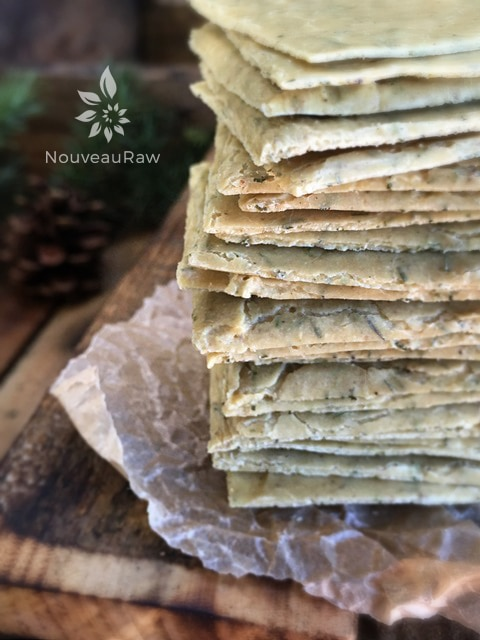

Onion Dill Wheatless Thins
~ raw, vegan, gluten-free ~
I will admit, I was a tad nervous about this cracker while it was in the dehydrator. I woke up at 1:00 A.M. in a panic and I said, “Crackers! I forgot to score the crackers!” lol So, I stumbled out of bed and blindly made my way through the dark house to the pantry.
The amazing aroma coming from the dehydrator woke me up and instantly made my tummy grumble. I carried the two trays into the kitchen, flipped on the light, and through squinted eyes, I took a look at the crackers. They were soooo thin.
Oh, dear. I grabbed the pizza cutter and made my score marks. At that hour they looked like a drunk driver swerving down the highway but I didn’t care. Get’m scored and get back to bed… my feet were cold!
I flopped back into bed with crackers dancing in my head (you know like sugar-plums?) and drifted back to sleep. I woke up to the sound of cows and roosters in the distance and my very first thought was…CRACKERS!
I remembered that the crackers appeared to be paper-thin in the wee hours of the night, so I quickly made my way back to the pantry, carried along with an amazing smell. Once I got them into the kitchen, I found that they were actually to be quite nice.
They are a thinner cracker but they are perfect for snacking on and they complement a salad perfectly. The flavor of this cracker is delicious. The right raw cheese could easily complement the tones in this cracker but I honestly like it by itself.
When I made the batter I divided it into two trays and spread it out from one edge to another. If you want a thicker cracker, don’t spread it as thin. You can control how thick, how thin, and how many crackers you end up with. This would pair wonderfully with Cream of Broccoli Soup and/or with Swiss Cheeze!
Batter yields 2 16×16″ trays
- 2 cups cashews, soaked 2 hours (rinse and drain)
- 1/2 cup water
- 2 Tbsp fresh lemon juice
- 1 Tbsp raw apple cider vinegar
- 2 tsp onion powder
- 2 tsp dried minced onions
- 1 1/2 tsp Himalayan pink salt
- 2 tsp garlic powder
- 1 tsp black pepper
- 2 Tbsp + 2 tsp dried dill
- 5 large zucchini = 4 1/2 cups diced
- 2 Tbsp ground flaxseed, added to zucchini first to absorb liquid
Preparation:
- Soak the cashew for about 2 hours just to soften them a bit. Rinse and drain.
- In the blender combine; cashews, water, lemon juice, apple cider vinegar, and spices. Blend until creamy. Set aside.
- Peel and dice the zucchini. Add to the blender along with the ground flaxseed and blend together.
- Spread the batter onto non-stick sheets that come with the dehydrator. Spread it out evenly so it dries evenly.
- If you don’t have non-stick sheets, you can use parchment paper but not wax.
- Dry at 145 degrees (F) for 1 hour, then reduce to 115 degrees (F) or 6-8 hours or until dry.
- This depends on how thick you spread it and the climate you live in.
- If you spread the batter thick, you can score the cracker to the desired size. If you spread the batter thin, you will need to wait about 4 hours into the drying process to score it.
- Once dried, cool and snap the crackers apart. Store in an airtight container on the counter. These will keep for many weeks unless you eat them sooner than that. :) I often freeze my crackers too. This extends their shelf life and keeps them crisp.
Culinary Explanations:
- Why do I start the dehydrator at 145 degrees (F)? Click (here) to learn the reason behind this.
- When working with fresh ingredients it is important to taste test as you build a recipe. Learn why (here).
- Don’t own a dehydrator? Learn how to use your oven (here). I do however truly believe that it is a worthwhile investment. Click (here) to learn what I use.



© AmieSue.com